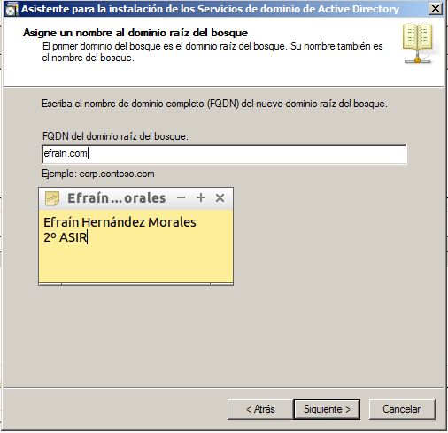

1. PDF Creator
PDFCreator para generar archivos PDF desde cualquier aplicación que soporte impresión. El software se utiliza como una impresora virtual que simplemente utiliza para imprimir un documento para generar el PDF.
1.1 Instalación PDF Creator
Empezamos descargando este programa desde la página web oficial y procedemos a su instalación.
Comprobamos que se ha añadido correctamente viendo nuestros dispositivos e impresoras.
1.2 Compartir en Red
Ahora, vamos a poner nuestra impresora PDF Creator en modo compartida en red.
2. Active Directory
A continuación, vamos a añadir el servicio de Impresión y Documentos desde nuestro Administrador del Servidor añadiendo nuevos roles. A su vez aña añadir este servicio, directamente se nos añadirá el servidor web IIS.

3. Servicios de Impresión y Documentos
Ahora, activaremos el active directory ya que dichas impresoras se autentificarán con usuarios del propio dominio.
Ahora, accedemos a nuestro navegador y vamos a comprobar si se encuentran las impresoras. Accedemos a través de nuestro dominio en active directory y la autentificación del usuario.
4. Pruebas
Ahora, vamos a nuestro cliente y empezamos probando si podemos acceder a nuestras impresoras del servidor.
A continuación, vamos a Agregar una nueva impresora.
Tras esto, cogemos un documento y le damos a imprimir desde nuestra nueva impresora y como comprobaremos desde nuestro servidor se ejecuta la acción.
Después configuramos el programa para que tenga un guardado automático en una carpeta en concreto.
Verificamos que se generen los pdf.